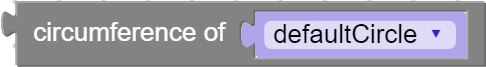

Methods
-
circle_circumference(circle)
-

Returns the circumference of the circle.
Check out the third party documentation for a more in depth explanation.Parameters:
Name Type Description circlecircle to get circumference of
Code Equivalent:
circle.circumference() -
circle_circumference_point(circle, degrees)
-
Returns a point containing the coordinates of the point on the circumference of the circle based on the given angle.
Check out the third party documentation for a more in depth explanation.Parameters:
Name Type Description circlecircle to get values from
degreesNumber angle to get the point at
Code Equivalent:
circle.circumferencePoint(degrees, true) -
circle_clone(circle)
-
Returns a new circle object with the same properties as the original.
Check out the third party documentation for a more in depth explanation.Parameters:
Name Type Description circlecircle to clone
Code Equivalent:
circle.clone() -
circle_contains(circle, x, y)
-

Returns true/false if the given x/y coordinate can be found within the circle.
Check out the third party documentation for a more in depth explanation.Parameters:
Name Type Description circlecircle to check
xNumber the x value to check
yNumber the y value to check
Code Equivalent:
circle.contains(x, y) -
circle_create(x, y, diameter)
-
Returns a circle with the given properties.
Check out the third party documentation for a more in depth explanation.Parameters:
Name Type Description xNumber x coordinate to create the circle at
yNumber y coordinate to create the circle at
diameterNumber diameter of the circle
Code Equivalent:
new Phaser.Circle(x, y, diameter) -
circle_get_numeric_field(object, field)
-
Returns the chosen numeric field value of the circle.
Check out the third party documentation for a more in depth explanation.Parameters:
Name Type Description objectobject to get values from
fieldthe field to get values of
Code Equivalent:
object.field -
circle_intersects(circle_a, circle_b)
-
Returns true/false if the two circle objects intersect, determined by the radius distances between the two.
Check out the third party documentation for a more in depth explanation.Parameters:
Name Type Description circle_afirst circle to check
circle_bsecond circle to check
Code Equivalent:
Phaser.Circle.intersects(circle_a, circle_b) -
circle_intersects_rectangle(circle, rectangle)
-
Returns true/false if the circle and rectangle objects intersect.
Check out the third party documentation for a more in depth explanation.Parameters:
Name Type Description circlecircle to check
rectanglerectangle to check
Code Equivalent:
Phaser.Circle.intersectsRectangle(circle, rectangle) -
circle_set_numeric_field(object, field, value)
-
Assign the chosen numeric field of the circle.
Check out the third party documentation for a more in depth explanation.Parameters:
Name Type Description objectobject to set the value for
fieldthe field to set
valueNumber value to set the field to
Code Equivalent:
object.field = value; -
cirlce_random(circle)
-

Returns a point containing random values of x and y found within the circle.
Check out the third party documentation for a more in depth explanation.Parameters:
Name Type Description circlecircle to get values from
Code Equivalent:
undefined